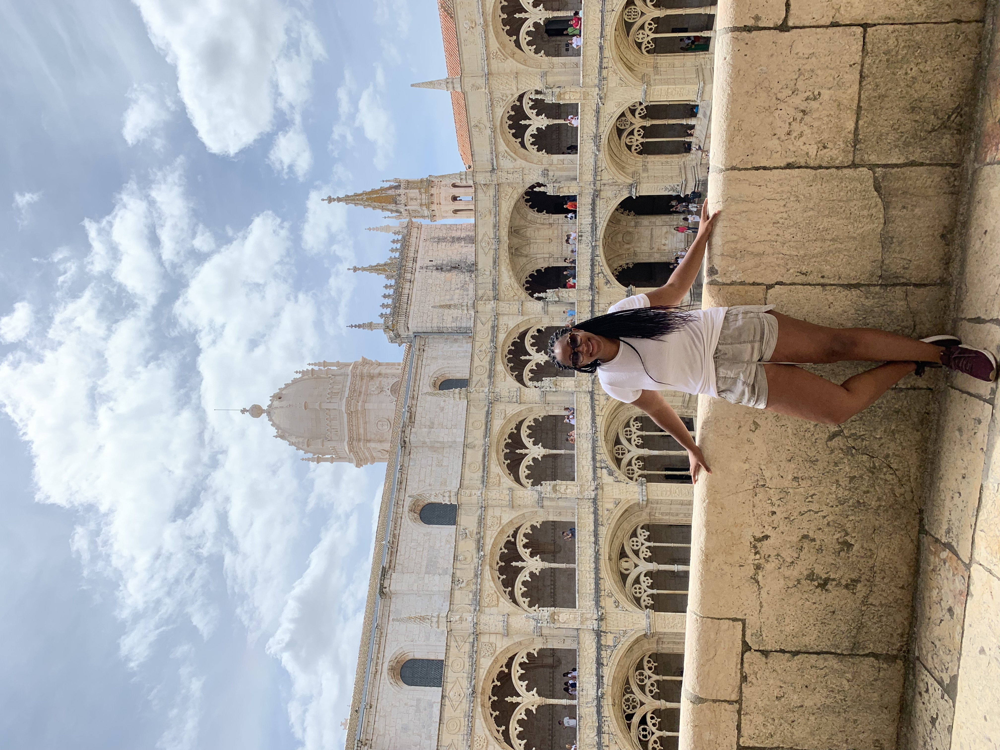
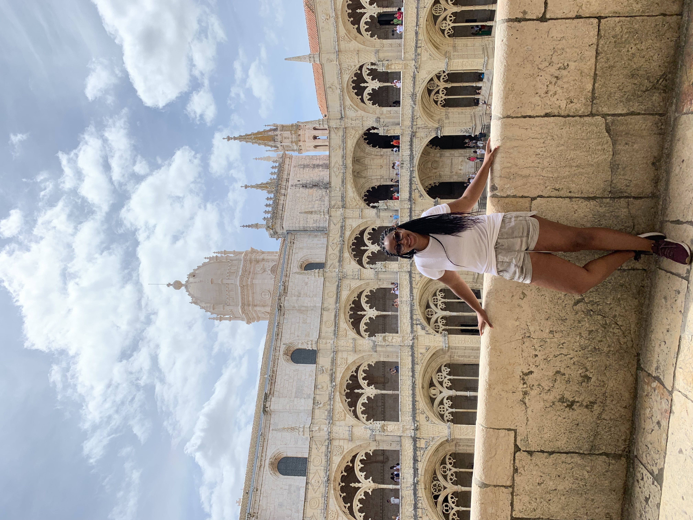

Brittany Renee Mayes
Maker of graphics and thinker of processes
I'm a graphics reporter at the Washington Post. I am also an adjunct professor at The University of Maryland, College Park. I was raised by NPR Visuals, and I'm an alumna of the beautiful University of North Carolina at Chapel Hill.
Experience
The Washington Post
June 2018-Current
I create graphics from scratch for print and online. To do this work, I coordinate with reporters, designers and editors. I also assist in hiring and management of interns and help review team processes and workflows.
Associate news apps developer
NPR
June 2016 - May 2018
I built static and interactive news graphics, largely in d3.js. I scraped, collected and cleaned data to analyze and chart. Additionally, I built, maintained and ran app rigs. I coordinated internship hiring and management.
Digital editor (Fellowship)
New York Times Student Journalism Institute
May 2018
I structured web content, creating custom-built web pages on Wordpress. Additionally, I collected and analyzed census data and produced data visualizations for featured content in print and online.
Bachelor of Arts, Media and Journalism, Minor in Women's and Gender Studies, The University of North Carolina at Chapel Hill, 2016
HTML5 and CSS3
Less/Sass
JavaScript/ jQuery
D3.js
python
data analysis
QGIS
Illustrator
Photoshop
Git versioning
 
